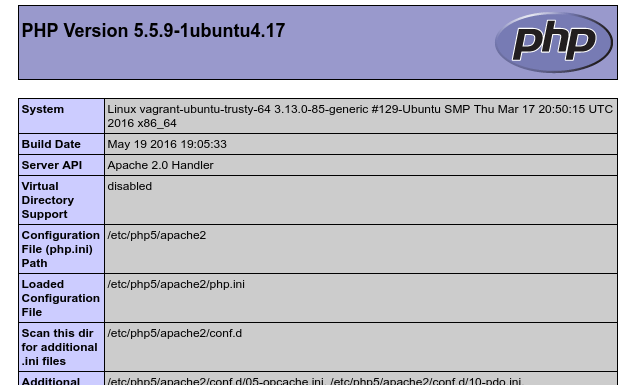

Table of Contents
In the previous post we’ve set up the apache web server successfully. Now it’s time to add MySQL and PHP to finish the LAMP stack. Let’s start with MySQL first and add a mysql.sh file to the sh directory. We write the following lines into that file.
debconf-set-selections <<< "mysql-server mysql-server/root_password password my_pw"
debconf-set-selections <<< "mysql-server mysql-server/root_password_again password my_pw"
apt-get install -y mysql-server libapache2-mod-auth-mysqlThe first two lines set values for the upcoming installation dialog of MySQL. The installation dialog will ask us for a password and to repeat it. Because we want to setup MySQL automatically without any interaction, we preset those fields with our password of choice. In this case my_pw. Afterwards we install MySQL and an extra package for apache. Afterwards we copy over the config file of MySQL onto the guest system.
if [ -f /vagrant/tmp/my.cnf ]; then
mv /vagrant/tmp/my.cnf /etc/mysql/my.cnf
else
>&2 echo "Error: my.cnf not found"
fiWe do it exactly the same way, as we did with the apache.conf. First we place the my.cnf in our conf directory. Afterwards we add a file provisioner to our Vagrantfile.
This time it’s important to replace a custom config file with the original, because in our modified version we switch the following line from:
bind-address = 127.0.0.1to
bind-address = 0.0.0.0Before it was only possible to access the database on the guest machine itself. We changed this, so we can connect from the host machine as well. Finally we need to restart the MySQL demon.
With which we end up in our final mysql.sh file, which looks like this:
#!/usr/bin/env bash
debconf-set-selections <<< "mysql-server mysql-server/root_password password my_pw"
debconf-set-selections <<< "mysql-server mysql-server/root_password_again password my_pw"
apt-get install -y mysql-server libapache2-mod-auth-mysql php5-mysql
if [ -f /vagrant/tmp/my.cnf ]; then
mv /vagrant/tmp/my.cnf /etc/mysql/my.cnf
else
>&2 echo "Error: my.cnf not found"
fi
service mysql restartFinal thing we need to do is adding the shell script as a shell provisioner to our Vagrantfile.
Now let’s install PHP as well. This is pretty straight forward. Our php.sh looks like this:
Afterwards we also add it as a provisioner
Which results in the following Vagrantfile
Vagrant.configure(2) do |config|
config.vm.box = "ubuntu/trusty64"
config.vm.provision "shell", path: "sh/update.sh"
config.vm.provision "shell", path: "sh/apache.sh"
config.vm.provision "shell", path: "sh/mysql.sh"
config.vm.provision "shell", path: "sh/php.sh"
config.vm.provision "file", source: "conf/apache2.conf", destination: "/vagrant/tmp/apache2.conf"
config.vm.provision "file", source: "conf/my.cnf", destination: "/vagrant/tmp/my.cnf"
config.vm.network "private_network", ip: "192.168.33.10"
config.vm.synced_folder "../", "/vagrant/projects/"
endThis is it. Our LAMP stack is complete. Now we want to check out our environment. Switch into the directory of the Vagrantfile and execute the following command
vagrant upA lot of stuff is happening now and for the first time it will take some time to fire up the vagrant machine. If vagrant booted up successfully, we add an index.php in the directory above our Vagrantfile. This is our project directory. I won’t show anything big here, just a proof of concept
If you browse to 192.168.33.10 on your host system, you should see an info page about the running PHP version, similar to this

Congratulations! You’ve done it! To suspend your vagrant machine just type the following in the same spot, where you did the vagrant up
vagrant suspendThis saves the state of your machine and will be the way to shut it down in daily business. If you want to completely reset your machine and install everything again, you execute
vagrant destroyTo start your vagrant machine, just do vagrant up again. You could start from here and put your own PHP project in the parent directory of the Vagrantfile and start programming. But if you want to know some nifty stuff, like how to access your website via an address like mysite.dev instead of 192.168.33.10 or how you can access your database with the mysql-workbench software on your host machine, you should definitely check out the next posts in this series. Go to Bonus 1